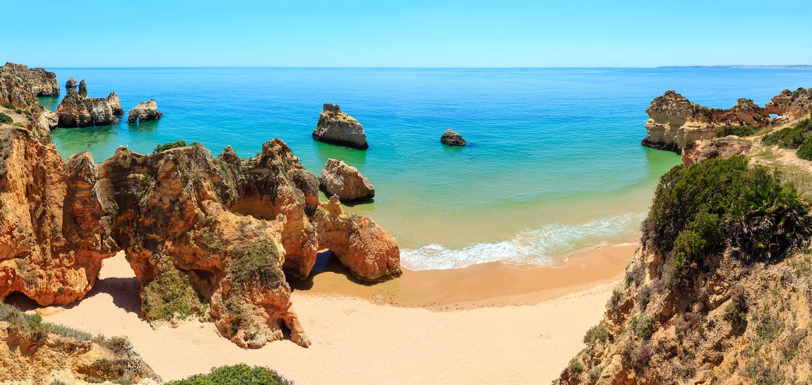
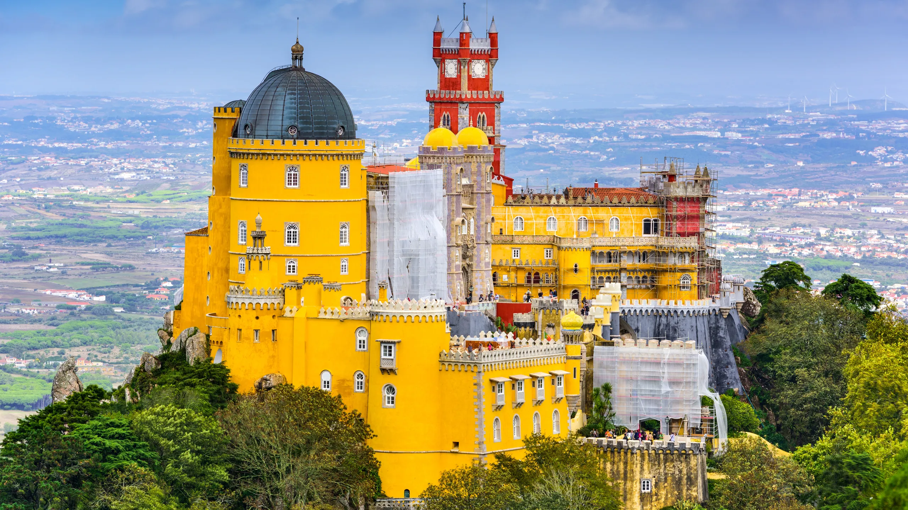
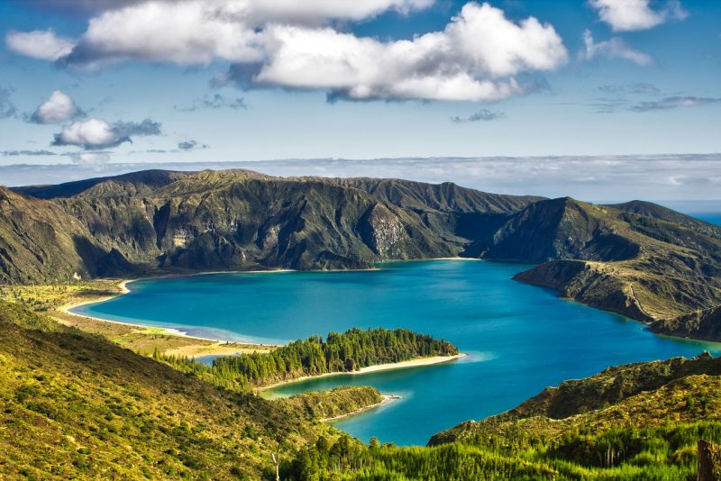

Vietas apmeklējumam Portugālē
Lisabona, Portugāles galvaspilsēta, ir pazīstama ar savu iespaidīgo arhitektūru, dzīvo kultūru un garšīgo virtuvi.
Algarve reģions, kas atrodas Portugāles dienvidos, lepojas ar apburošām pludmalēm, gleznainām klintīm un burvīgām piekrastes pilsētiņām.

Portu ir slavens ar savu vēsturisko centru, portveinu un Douro upi. Nepalaist garām izpētīt tās šaurās ielas un garšot vietējos delikateses.
Sintra, UNESCO Pasaules mantojuma sarakstā, ir slavens ar savām romantiskajām pilsētām, bagātīgajiem dārziem un mistisko atmosfēru.
Faro, Algarves vārti, piedāvā vēstures un modernitātes savienojumu, ar savām viduslaiku sienām, bruģētām ielām un dzīvo nakti.
Azoru salas, vidusatlantijas arhipelāgs, vilina apmeklētājus ar savām iespaidīgajām ainavām, vulkāniskajiem krāteriem un dabiskajām termālajām avotām.
